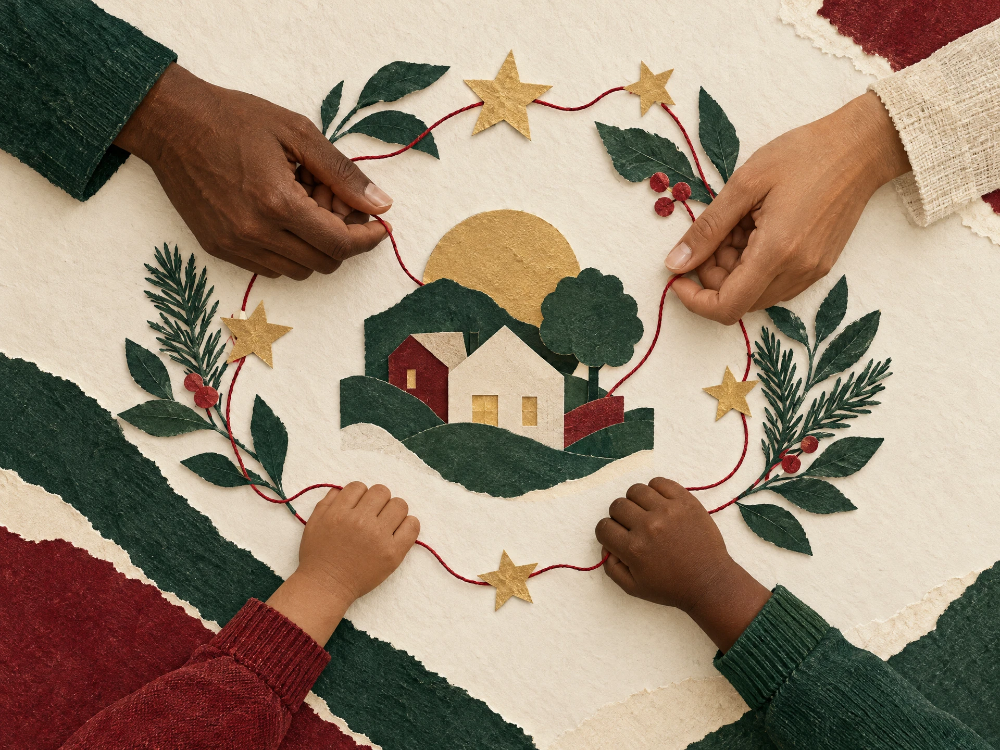

Presença
Vínculos que continuam depois da foto, da cesta e da data comemorativa.
Sobre a Natalia
Somos uma ONG brasileira que transforma apadrinhamento em vínculo, oportunidade e presença ao longo do ano.
A Natalia começou em 2017, quando um grupo de educadores, famílias e moradores do Jardim Aurora se juntou para pensar em como apoiar crianças do território para além das urgências.

✦ cuidado se constróiPercebemos que doações pontuais ajudavam, mas eram os vínculos consistentes que mudavam a forma como cada criança se enxergava no mundo. Assim nasceu o nosso jeito de apadrinhar: com acompanhamento próximo, escuta das famílias e projetos desenhados com quem vive cada realidade.
Hoje, nossa rede reúne padrinhos, voluntários, escolas e parceiros locais. Seguimos pequenos o bastante para conhecer cada história pelo nome — e organizados o bastante para fazer cada gesto chegar onde precisa.
Não é sobre fazer por alguém. É sobre fazer com alguém.
— princípio NataliaVínculos que continuam depois da foto, da cesta e da data comemorativa.
Escutamos crianças e famílias para construir respostas possíveis e dignas.
Prestamos contas, compartilhamos aprendizados e cuidamos dos recursos.
Nossa missão
Conectamos padrinhos e comunidades a crianças e adolescentes em situação de vulnerabilidade, apoiando desenvolvimento, autonomia e acesso a oportunidades com cuidado de longo prazo.
Para onde vamos
Ampliar a presença de adultos de referência na vida de cada criança acompanhada.
Facilitar acesso a educação, cultura, saúde e experiências que ampliem horizontes.
Construir corresponsabilidade para que o cuidado seja uma prática coletiva.
Vem com a gente